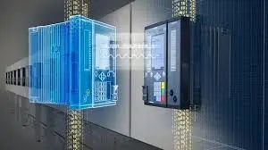
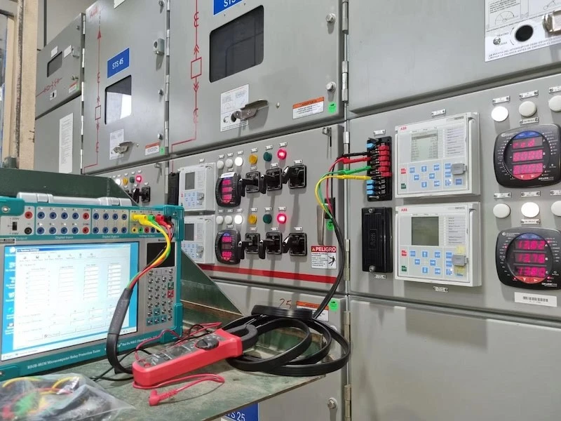
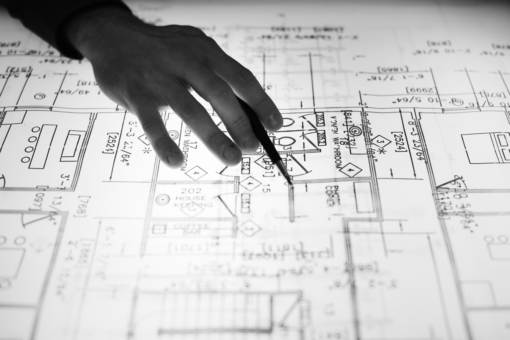
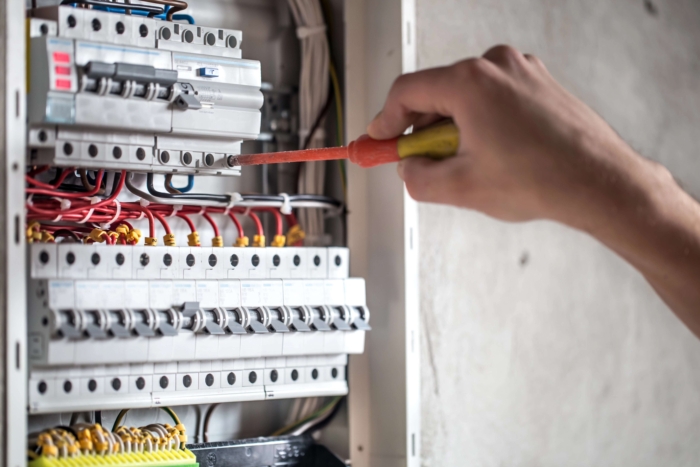
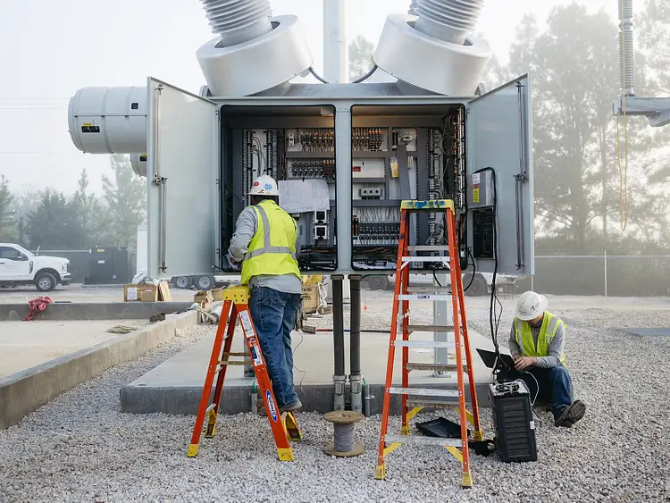
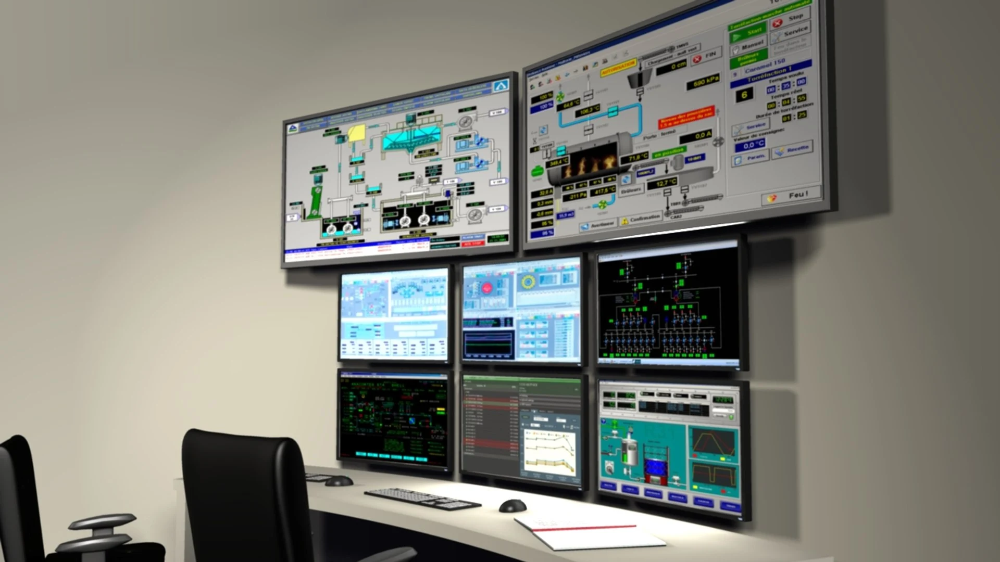
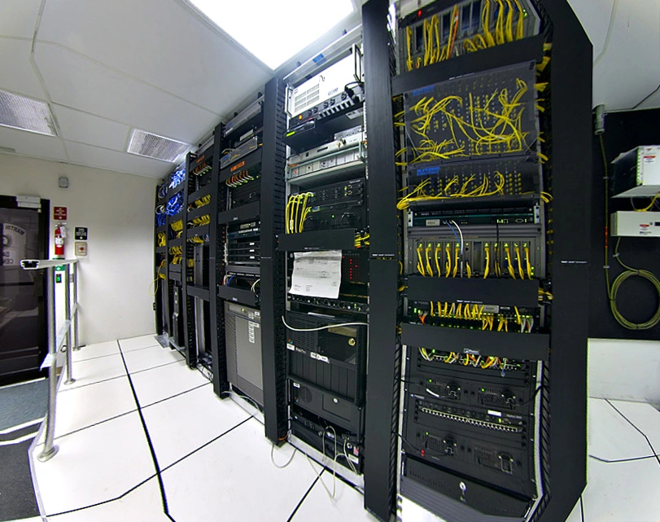
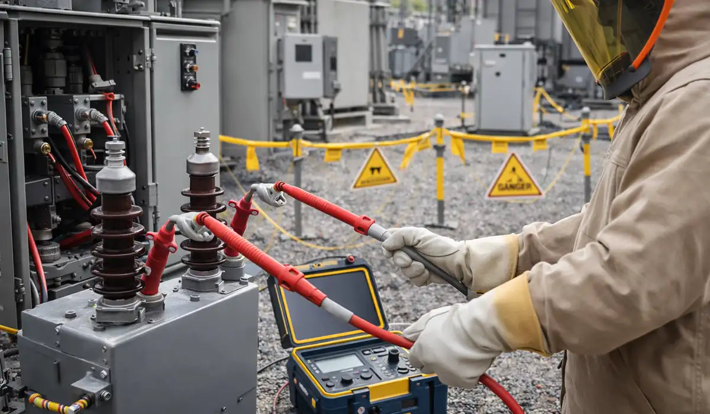

OUR SERVICES
Providing reliable, safe, and high-quality electrical engineering solutions for power systems, utilities, and industrial applications.

Protection Relay Configuration
Professional configuration, coordination, and settings calculation of protection relays to ensure the safe and reliable operation of electrical power systems.

Relay Testing & Troubleshooting
Comprehensive testing, fault simulation, and troubleshooting services to verify relay functionality and identify operational issues before system energization.

AutoCAD Circuit Design
Development of accurate secondary circuit interconnection diagrams and electrical drawings using AutoCAD, following industry standards and project requirements.

Electrical Installation Services
Installation of electrical equipment, control systems, cables, and associated infrastructure with a focus on safety, quality, and compliance.

Power Equipment Commissioning
Testing and commissioning of power equipment, including transformers, circuit breakers, and control systems, to ensure proper performance and operational readiness.

SCADA Configuration & Testing
Configuration, integration, and testing of SCADA systems for efficient monitoring, control, and data acquisition in industrial and power facilities.

Telecommunication Systems
Installation, configuration, commissioning, and testing of telecommunication equipment to support reliable communication and network operations.

High Voltage Testing & Commissioning
Execution of high-voltage testing and commissioning activities for transformers, circuit breakers, switchgear, and other critical power system equipment to ensure safety and compliance.